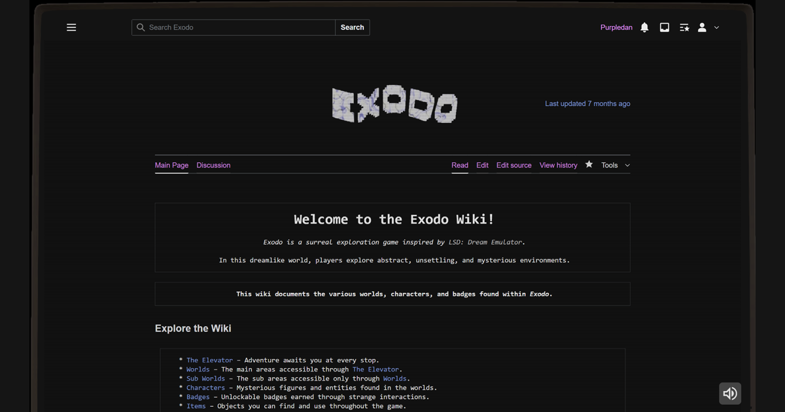

All work.
Games, websites, and the systems behind them.
 War of the WorldsRoblox systems · Luau
War of the WorldsRoblox systems · Luau Dynamic Reverb TestAudio experiment · Luau
Dynamic Reverb TestAudio experiment · Luau
Exodo WikiWeb design · HTML / CSS / JavaScript
No projects in this category. Choose All to see every project.